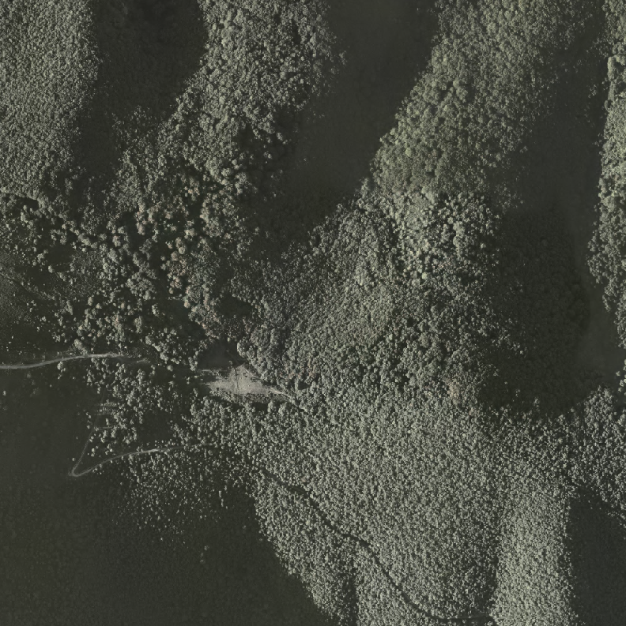
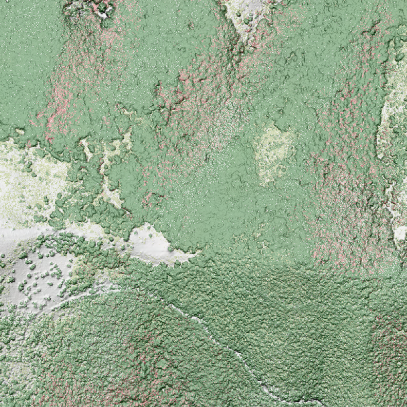
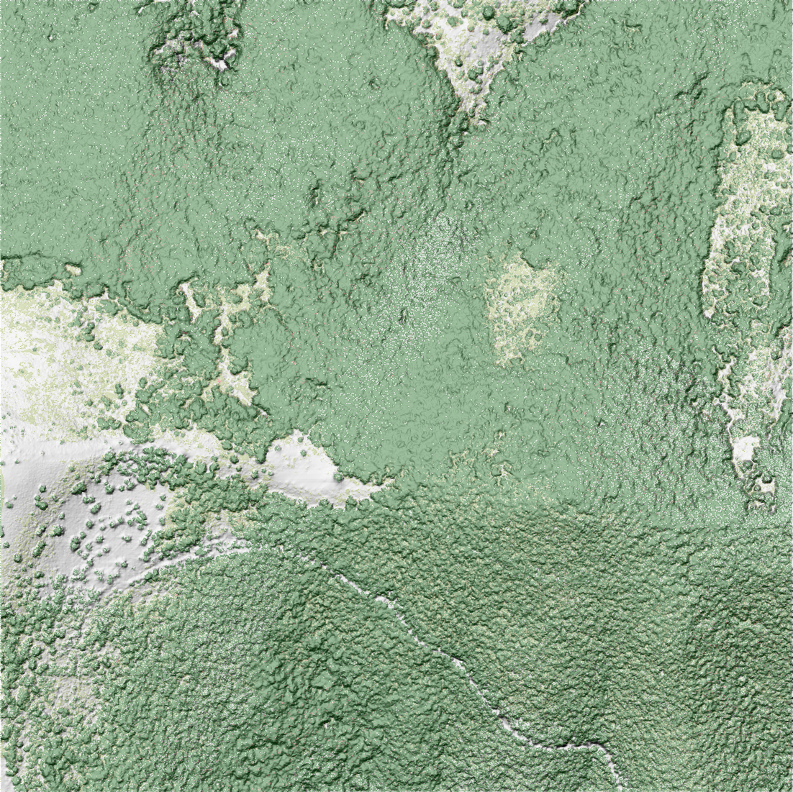
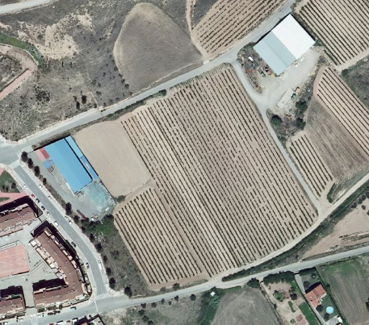
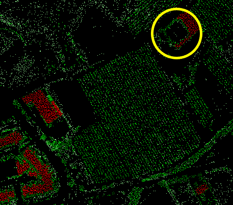
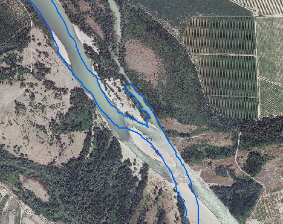
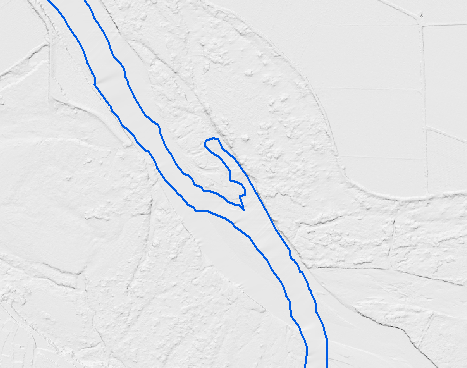

Improvements
We are aware that there is no automatic process for a perfect LiDAR classification.
Technology also has its limitations. As a result of the capture procedure itself, or because of the behavior that some elements offer when reflecting laser light, we have found some cases or areas in which we believe it is convenient to intervene in a more specific way.
In the design of our processing we have tried to improve the quality of the classification as far as possible, while reducing to the minimum those areas that require a personalized treatment.
In order to know the nature of these problems and in order to detect more easily those cases in which they occur, we expose below the casuistry that generates them, pointing to a solution:
NDVI
In Lidar classification processes, the reflectivity values of some forest formations with dense and of uniform height, are often interpreted as buildings.
To avoid this confusion, one of the procedures when RGB + Ir information is available is to calculate the Normalized Difference Vegetation Index (NDVI) for each of the cloud points.
Based on this information and taking into account the number of echoes in each area, it is necessary to determine whether the LiDAR response corresponds to a vegetation area or not.
This procedure offers very good results in the classification, especially in those areas where there are RGB + Ir thresholds that allow the calculation of sufficiently discriminatory NDVI values.
However, in many cases, there are disturbances of the signal that produce a decrease in the NDVI value:
- Contaminación por nubes.
- Cloud pollution.
- Effects due to the geometry of the observation (observation outside the nadir).
- Effects produced by lighting (shadows).
- Weather conditions.
As a consequence, the LiDAR response is strongly conditioned by aspects such as: the time of the shot, the atmospheric conditions, the solar position, the angle of vision and the width of the sensor bands, the slope and exposure of the relief, the type of vegetation, as well as its phenological and physiological condition.
Particularly in mountainous reliefs, the measured radiance recorded by a sensor from a ground cover on a shaded exposure slope (hidden from the sun), may be considerably smaller, than that measured from the same ground cover located on a sun exposure slope (exposed to the sun).
This make the calculation of the NDVI vegetational parameter difficult, because the spectral behavior of the vegetation is altered by the presence of shadows (Riaño et al 2003, Eastman 2006), resulting in that the response of the vegetation affected by shades differs a lot from that of the illuminated vegetation, in spectral terms.
In the following images you can see the effects of this circumstance in the classification, checking the strong correlation that exists between the shadow areas of the image and the points wrongly classified with the value type 6 (Building), represented in pink.


To improve the initial results of the classification in these areas, it is necessary to act on the points already classified as Buildings. The NDVI threshold is readjusted, considering at the same time the elevation of the points analyzed, the number of echoes in each zone and the intensity of the signal.
The result of this new revision can be seen in the following image, in which you can visually verify that the problems detected in the previous phase have been corrected.

Warehouses
We have seen that the results of automatic classification in industrial areas are quite limited, possibly due to the complexity of the elements (corrugated surfaces, roofs where objects exist on the roof), the construction material of the roofs (metal surfaces or highly reflective ones), as well as the proximity between constructions.


In addition to the inherent problems of reflectivity, it is necessary to take into account that industrial or agricultural warehouses that are located in isolated areas are not classified correctly, since there is a minimum area of polygon in SIOSE. These are included within larger polygons, so the parameters that are used in classification for the whole area occupied by the SIOSE polygon, are not the most adjusted to discriminate industrial buildings that are isolated.
For its treatment and correction, the identification and vectorization of constructions has been proposed. In this way you could adjust the automatic process to classify your points within the building category.
Hydrography
Although in the water the laser pulse used is absorbed and therefore does not produce a return (no return record is obtained), there are some cases, possibly due to the content in the water of particles in suspension, in which it does register a reflection, which translates into an undetermined category point inside the watercourse..
To avoid this problem, it has been decided to delimit the water courses from the 'Water' category of the SIOSE layer and apply the standard classification parameters.
Taking into account that the precision of the SIOSE layer corresponds to a reference scale of 1: 25,000, some margins do not fit perfectly into the river channel with the accuracy offered by the LiDAR, this means that on the banks of some rivers there are points in their margins or inside them, which are not classified correctly.
Taking into account that the precision of the SIOSE layer corresponds to a reference scale of 1: 25,000, some margins do not fit perfectly into the river channel with the accuracy offered by the LiDAR, this means that on the banks of some rivers there are points in their margins or inside them, which are not classified correctly.
To have a proper classification of the interior and marginal areas of water courses, it is proposed to use a hydrographic mask generated from a cartography / orthophoto with an accuracy better than 25 cm, which is not always possible.
Also related to this question, it is necessary to refer to the existence of very wide fluvial channels lacking, except in exceptional cases, of hydrographic flow. This figure, of fluvial character, different in its nature to a rambla or yasa, and that in all the cartographies tends to be represented and codified as a hydrographic course in all its amplitude, needs to be treated in a specific way for its correct classification, discriminating the area occupied by its channel, normally dry, from the permanent hydrographic flow, if any.


Note: In relation to what is indicated in this section, is of great interest the document "Applications of laser remote sensing (LIDAR) in the characterization and management of the fluvial medium" by Fernando Magdaleno Mas and Roberto Martínez Romero.
Flood barriers
It has been observed that some natural and artificial flood barriers are classified as 'low vegetation'. It is a fairly common confusion.
Although the problem has been corrected by the use of the infrared band, the results obtained are not entirely satisfactory, so it is recommended to detect the location of these structures from other sources of information, for a review of the classification.